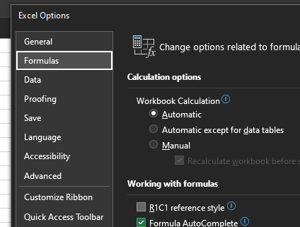

Relative, absolute, mixed, and structured references
excel
intermediate
Session materials
- all materials
- slides
html / pdf - exercises
.xlsx / completed exercises .xlsx
Previous attendees have said…
- 9 previous attendees have left feedback
- 100% would recommend this session to a colleague
- 100% said that this session was pitched correctly

Three random comments from previous attendees
- very useful, especially using new version of Excel and named tables.
- I always use A1 referencing but have seen the light and Structured Referencing is the future :-)
- I missed the first 20 minutes as I was tied up in another meeting, but found what I did attend useful, thank you
Welcome
- this session is for 🌶🌶 intermediate Excel users
- you’ need Excel of some sort to follow along
- you’ll also need the exercise workbook
- if you can’t access the chat, you might need to join our Teams channel: tinyurl.com/kindnetwork
- you can find session materials at tinyurl.com/kindtrp
Session outline
- this is an intermediate-level review of referencing techniques in Excel
- it’s a technical session, so we’ll concentrate on the how of referencing
- A1 references
- relative
- absolute
- mixed
- structured references
- R1C1
A1 references
- A1 references are the standard way that references are made in Excel
- A1 references are usually made up of a letter and a number (like A2, B56, …)
- the letter stands for the column a cell is in
- the number stands for the row
- we can use those references in formulas
=A1will copy the values from A1 into the current cell
- you can also use the
range operator(:) to select several values - likeA1:A3
Task
- using A1 references, can you populate the first three rows of the summary table in the
A1 referencingsheet?
- Start date
- End date
- First duty manager
- you might need to switch off Calculated Columns from the floatie

Absolute vs relative references
- by default, A1 references are relative
- if the formula moves, the reference will change
Task
- try copy/pasting your three summary values:
- a few columns across
- a few rows down
- what happens to your values?

- as you’ve seen, relative references can cause problems
- you can change relative references to absolute (=fixed) references using
$$A$1refers to A1 no matter what- use this if you absolutely always want to refer to the same cell
Task
- update your relative references in the summary table to absolute references by adding
$before both the column letter, and the row number
Note
- if you click in the formula bar,
F4toggles absolute/relative
Mixed references
$A1will be absolute in the column, but relative in the rowsA$1will be relative in the row, but absolute in the column- take care with these - they’re pretty confusing (and we’ll look at a much better way of doing the same thing below)
Structured referencing
- most objects in Excel can be named - including cells, tables, and ranges
- structured referencing is a special case
Table[Column]syntax- shared across Power BI, PowerQuery…
Task
- please switch to the
Structured referencingsheet - sum up each of the three service columns in the summary table
=SUM(SR_table[service_a])/=SUM(SR_table[service_b])/=SUM(SR_table[service_c])
Implicit intersection
- you can convert a structured reference to a column to refer to a single value
- that’s done using the implicit intersection operator
[@col]- (if you’re using an older version of Excel, you might also see this written as
[@[Service_duration]])
- (if you’re using an older version of Excel, you might also see this written as
- if you pick reference locations with the mouse, this is how Excel will render your references
Task
- please try populating the
daily_totalby summing with implicit intersection
=SUM(SR_table[@[service_a]:[service_c]])
R1C1
- R1C1 gives an alternative way of referring to cells
- slightly more complicated, but more precise, and less confusing
- largely encountered in VBA, but available and helpful in standard Excel
Task
- Switch to the
R1C1 referencingsheet - switch to inspect formulas (
Ctrl+ backtick) - Have a look at the formula in the
First namecolumn - Now switch your workbook to R1C1 by
File>Options>Formulas>R1C1 reference style

- column letters (A, B, C,…) are replaced by numbers
- row numbers remain as row numbers
- R1C1 = A1
- R2C8 = H2
Task
- Have another look at the formula in the
First namecolumn - it should be much easier to conclude that this is the same formula in every row
Types of R1C1 referencing
- three kinds of R1C1 reference:
- absolute reference = specify a row and column number (
R2C2) - relative reference by adding a numeric offset in square brackets (
R2C[-6]) - implicit intersection-like “give me this row’s column 2” by using a bare R/C (
RC2)
- absolute reference = specify a row and column number (
- a much nicer way of doing mixed referencing
Task
- in R16C4, please populate the four rows of the
Agecolumn in the summary table using R1C1
Why bother with R1C1?
- R1C1 adds a bit of complexity to simple formulas
- but it makes complicated formulas (and repeated formulas) much easier to understand
- this is a big help when working with more complex Excel documents - particularly if you’re debugging something that’s gone wrong
- R1C1 gives the same formulas for the same work across different columns
- we have to work this out by hand with A1 referencing - the row number would be different each time
- this helps us understand quickly when and where a formula is repeated
- (apparently) R1C1 is faster with very complex sheets